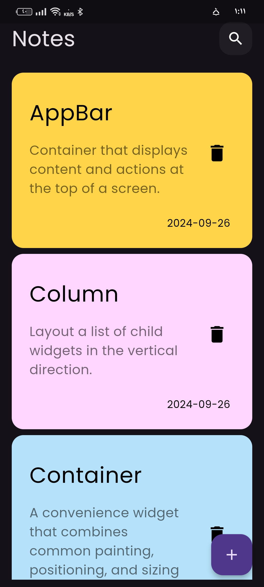
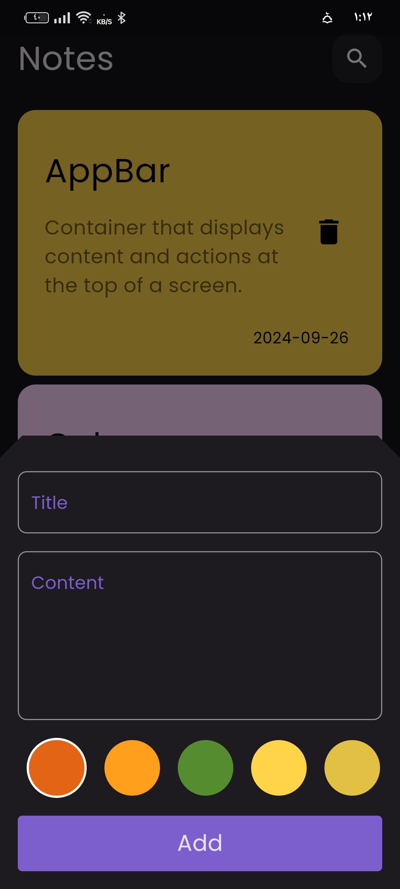
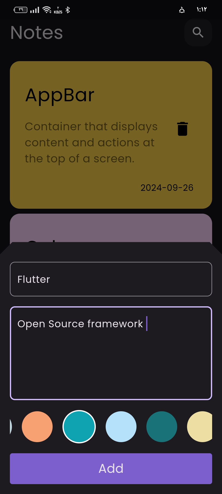
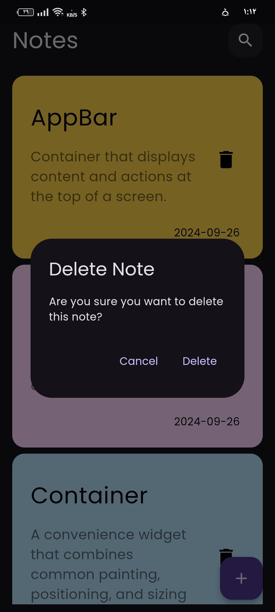
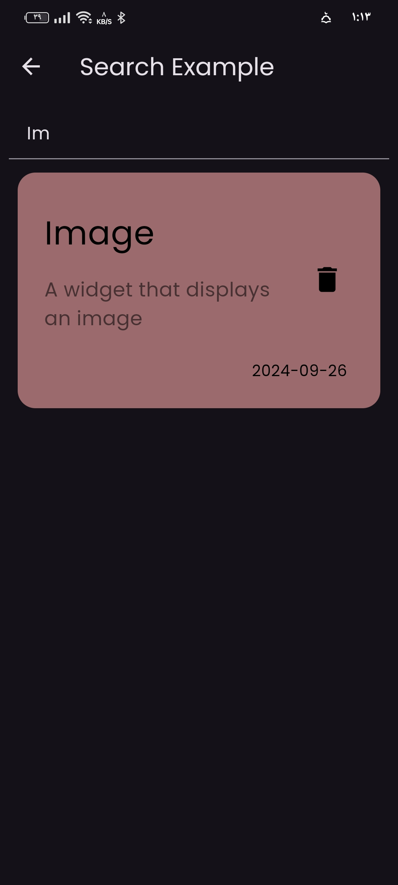
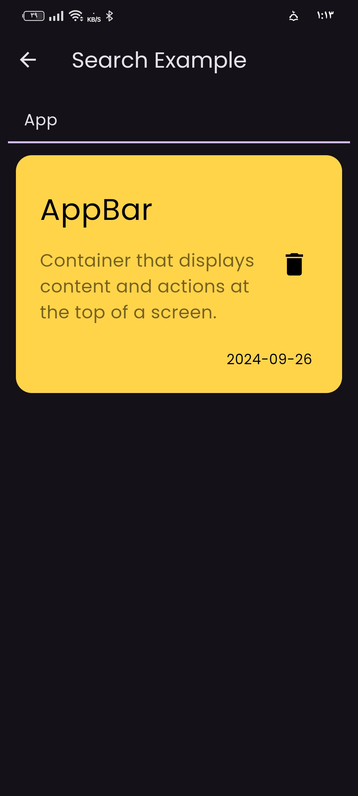
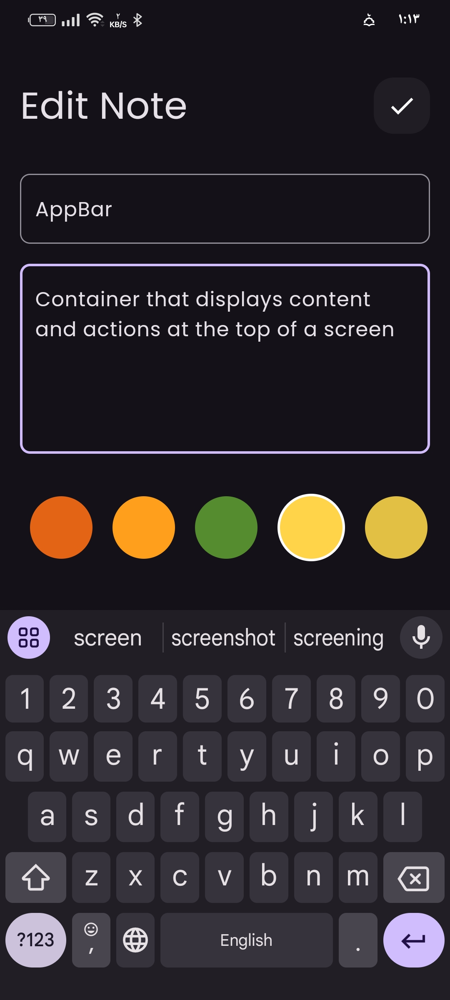

Notes App
Overview
The Notes App is a simple yet powerful mobile application for users to create, edit, and organize their notes. It features an intuitive interface, making it easy for users to manage their thoughts, reminders, and tasks.
Features
- Create, edit, and delete notes
- Organize notes by categories or tags
- Search functionality to find specific notes
- Autosave and offline mode
- Dark mode and customizable themes
- User-friendly and responsive design
Technologies Used
- Flutter for cross-platform development
- Dart programming language
- Firebase for backend and real-time data sync
- Adobe XD for UI/UX design
Project Gallery







Project Video
GitHub Repository
View the source code on GitHub: Notes App GitHub Repository
Conclusion
The Notes App showcases a clean and efficient way to manage notes with real-time sync using Firebase. This project demonstrates proficiency in mobile app development and highlights the flexibility of Flutter for both simple and complex apps.
Back to Portfolio